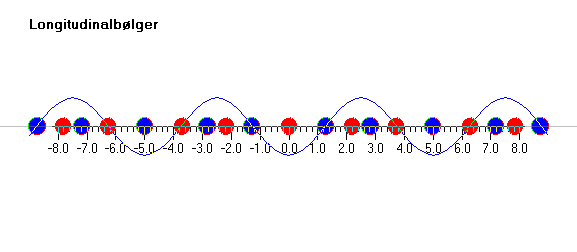
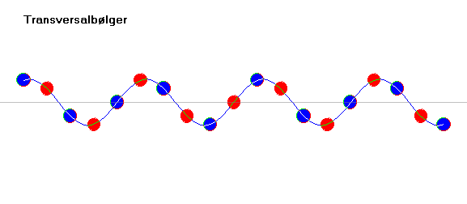

Denne simulation kan vise longitudinalbølger og transversalbølger.
Longitudinalbølgerne kan være lydbølger og de blå og røde kugler »molekyler«. Vælges »Kør« i regnbuen vil overtryk og undertryk udbrede sig mod højre. Hvis man som her vælger at få vist den blå kurve, kan man bedre følge bølgeudbredelsen.

Transversalbølger kan fx være snorbølger. Prøv selv at lave forskellige former for bølger på en snor.
Nogle bølger er transversalbølger andre er longitudinalbølger og i nogle medier kan begge bølgetyper forekomme. Udfyld nedenstående tabel:
| transversalbølger | longitudinalbølger | |
| lyd | ||
| lys | ||
| tryk | ||
| jordskælv | ||
| … | ||
Hvilke bølgeformer kan udbrede sig i luft?, i væske?, i fast stof?
Hvad får bølgen til at udbrede sig?